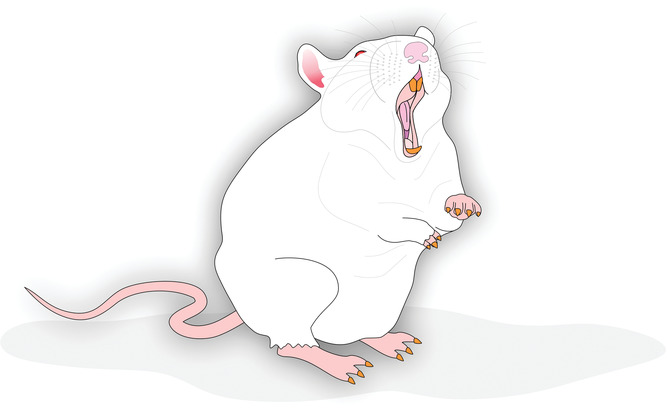

신경발달학적 모델
신경발달학적 모델의 탄생
1987년 신경발달학적 가설을 제안하여 조현병에 대한 이해의 틀을 바꾼 미국의 의학자 Weinberger는 자신의 가설을 뒷받침할만한 동물 모델을 찾고 있었다.[1] 그는 동료 연구원인 Lipska와 함께 갓 태어난 쥐의 배측 해마에 ibotenic 산을 주입하여 파괴한 후, 이 쥐들이 청소년기가 되었을 때의 행동 변화를 관찰해보았다. 손상을 입은 쥐들은 초기 발달기에는 이상을 보이지 않았으나, 청소년 기를 넘어가면서 상동행동이나 과다행동이 늘어나는 등 이상 반응을 나타내기 시작하였다.[2] 이는 태생기나 발달 초기에 가해진 생물학적 손상이, 청소년기 이후에 특징적인 증상 복합체로서 모습을 드러내는 것으로 해석되었으며, 신경발달학적 가설을 뒷받침하는 유력한 모델로 받아들여졌다.
1 Daniel Weinberger (1947~): 미국의 정신과 의사로 존스홉킨스 의과대학의 교수이며, Lieber Institute for Brain Development의 소장이다. 조현병의 신경발달학적 가설을 내놓았을 뿐 아니라, COMT 및 NRG1 유전자의 변이가 조현병 위험을 높인다는 사실을 밝혀냈다. 특히 COMT 변이에 대한 발견은 조현병의 유전적 위험인자에 대한 최초의 발견이기도 하였다.
2 Barbara K Lipska: 폴란드에서 태어났으며, 미국으로 이민온 후 국립정신보건연구원(NIMH)에서 경력을 시작하였다. 주로 조현병의 동물 모델을 연구하는데 공헌했으며, 환자들의 사후뇌조직 연구에도 역량을 발휘하였다. 2015년에 흑색종이 뇌로 전이되었다는 진단을 받았으며, 약 두달에 결쳐 정신증 및 치매 증상을 몸소 경험하였다. 그녀는 회복후 자신의 생생한 경험을 “The Neuroscientist Who Lost Her Mind”라는 저서로 출판하였다.
이 모델이 등장한 이후, 갓 태어난 쥐나 아직 태어나기 전의 쥐에게 조작을 가한 후, 청소년 혹은 성인기에 이르렀을 때 행동을 측정하는 모델이 다양하게 만들어졌다. 연구자들은 행동을 측정할 뿐 아니라 신경세포의 미세한 형태학적 변화까지 들여다보면서, 조현병과 관련된 단서를 찾아내고자 애썼다. 이 모델의 장점은 가해진 조작이 조현병을 일으킬 수 있느냐 없느냐 뿐만 아니라, 어떤 식의 발달과정을 거쳐서 조현병에 이르게 하는지 그 중간과정도 살필 수 있다는 점이다. 게다가 증상이 발현되기 전의 쥐에게 다양한 치료 수단을 강구한 후 청소년기가 되었을 때 증상 심각도를 측정함으로써, 조현병 발병을 미리 예방하는 방안을 모색할 수 있다는 가치가 있다.[3]
다양한 신경발달학적 모델
MAM 모델
Weinberger와 Lipska가 제안한 원래 모델은 복잡한 수술적 처치를 필요로 하였기 때문에, 다른 실험실에서 사용하기 어려웠다. 좀더 용이한 모델을 탐색하던 연구자들은 임신 중인 산모 쥐에게 nitric oxide synthase 억제제인 L-nitroarginine이나 세포분열 억제제인 methylazoxy-methanol (MAM) 을 투여하면, 태어난 자식 쥐가 조현병과 유사한 행동 양상을 보인다는 것을 발견하였다.[4]
MAM은 DNA에 메칠 기를 붙여, DNA 복제를 방해한다. 이런 식으로 MAM은 신경아세포(neuroblast)의 분열을 방해하지만, 그렇다고 신경교세포(glial cell)를 비롯한 다른 세포에는 영향을 끼치지 않기 때문에 기형아 출산으로 이어지지는 않는다.[5] 연구가 거듭되면서 태생기 17일에 MAM을 투여한 모델이 가장 널리 사용되게 되었으며, 이를 MAM-E17이라고 부른다.[6] MAM-E17 쥐는 안쪽 전전두엽의 용적이 줄고 뇌실이 커지며, 변연계나 대뇌피질의 parvalbumin 사이뉴런이 줄어든다. 이 쥐들은 사회성이 떨어지며, 파동전 억제나 기억 과제에서의 성적 역시 저하된다. 암페타민이나 MK-801을 투여하면 매우 민감한 반응을 보이며, 이러한 손상은 항정신병 약물에 의해 일부 경감된다.[6]
격리 양육 모델
어린 시절의 양육환경이 조현병 발병에 유의한 영향을 미칠 것이라 믿던 학자들은, 자신들의 이론을 지지할 모델을 찾고자 하였다. 연구자들은 태어난 지 21일된 쥐를 이후 수 주 동안 사육용 우리에 혼자 지내게 하여, 인공적인 격리 양육 모델을 만들었다. 이 쥐들은 또래가 있는 사육용 우리에 돌려보내진 후에도 정상적인 사회적 상호작용을 할 수 없었다. 더우기 PPI의 손상 등 조현병과 유사한 인지 손상을 보였는데 이는 항정신병 약물에 의해 일부 호전될 수 있었다.[7,8] 흥미로운 것은 성인이 된 쥐는 일정기간 격리생활을 한 후에도, 다시 또래 쥐들과 합류한 다음에는 금방 활발한 상호작용을 한다는 것이다.[9] 한편 이러한 사회적 상호작용의 손상 정도는 종(strain)에 따라 크게 차이가 났다.[10] 이는 어린 시절의 양육 경험이 사회성 발달에 큰 영향을 미친다는 것을 보여줄 뿐 아니라, 그 효과가 유전적 소인과 상호작용한다는 것을 알려준다.
그러나 격리 양육 모델은 조현병 뿐 아니라, 우울, 불안, 중독, 충동성 등 다양한 정신 질환의 모델로 사용되어 왔으며, 조현병에 고유한 모델이라고 말하기는 어렵다.[11]
산모의 면역항진 모델
발달과정에 있는 태아나 산모에게 가해지면 조현병 위험을 높인다고 알려진 요인으로는, 보통 세균이나 바이러스 감염, 영양 부족, 외상, 주산기 합병증 등을 거론하는데, 그 중 뺴놓을 수 없는 것이 면역학적 스트레스이다.[12] 면역학적 스트레스는 산전 위험요인들의 공통 분모라고도 볼 수 있는데, 왜냐하면 앞서 언급한 기타 요인들이 모두 산모의 면역체계에 혼란을 가져오기 때문이다.
이러한 과정을 재현하기 위해 소위 산모의 면역항진 모델(maternal immune activation model, MIA)이 만들어졌다. 예를 들어 LPS를 임신 중인 쥐에 투여하면, 사이토카인 분비가 증가하면서 열이 나는데, 이는 태생기 세균 감염을 재현한 모델이라 할 수 있다.[13] 이 산모에게 태어난 쥐는 PPI나 작업 기억의 손상을 보이며, 암페타민에 의한 과다행동 발현에 매우 민감해진다.[14] 또한 해마와 전전두엽의 수상돌기 간극(dendritic spine) 감소나 도파민 분비 세포의 비정상적 흥분이 관찰되기도 한다.[15] 한편 해당 산모가 철분 결핍까지 동반하면 태아 쥐의 행동 이상이 더 심하게 나타나는데, 이는 영양 상태 불량과 세균 감염이 겹치면 조현병 위험이 배가된다는 가능성을 시사한다.[16]
3 Lipopolysaccharide (LPS): 그람 음성 박테리아의 세포벽 성분 중 하나이다. 전임상 실험에서 인공적으로 면역 반응을 유발하기 위해 흔히 사용된다. 세균이 발생시키는 독소는 크게 외독소(exotoxin)과 내독소(endotoxin)로 나뉜다. 전자는 세균이 합성하여 분비하는 독소이며, 후자는 세균이 용해될 때 외부로 노출되는 독소이다. LPS는 대표적인 내독소로, 세균 감염시 발열반응이나 폐혈증을 일으킨다.
LPS가 세균 감염을 재현한 것이라면, poly I:C는 바이러스 감염의 모델이다.[20] 임신 중에 poly I:C를 투여받아 태생기에 과도한 면역기능 활성화를 겪은 쥐들은, 다양한 시험 과제에서 조현병과 유사한 인지 손상을 보인다.[21] DISC1은 고전적인 조현병 취약 유전자 중 하나로, DISC1 단백질과 복합체를 형성하는 일련의 유전자 집단은 신경발달 과정에서 중심적인 위치에 놓여있다.[22] 2011년 Pletnikov가 이끄는 연구진은 돌연변이 DISC1 유전자(mutant human DISC1, mhDISC1)를 지니고 있는 쥐를 만들어내었다. 그들은 임신 중인 쥐에게 poly I:C를 투여한 후 mhDISC1의 발현을 인위적으로 변화시켜가면서, DISC1과 면역 항진 상태가 어떤 식으로 상호작용하는지 살펴보았다.[[23]] 연구자들은 똑같이 poly I:C를 투여받았다 할 지라도, 발달과정 내내 DISC1 작용이 방해를 받았던 쥐들만이 조현병 유사 증상을 나타내었고, 중간에 DISC1 활성이 회복되었던 쥐에서는 해당 증상이 나타나지 않는다는 것을 관찰하였다. 이는 면역학적 유해요인이 특정 유전자 및 해당 단백질과 상호작용하여 발병에 이르게 한다는 소위 two-hit 가설을 입증한 연구가 되었다.[25]
4 Polyriboinosinic-polyribocytidilic acid (poly I:C): 인공적으로 합성된 이중 나선 RNA (dsRNA)이다. 원래 1960년대에 항바이러스 제제로 만들어졌으며, 암세포의 증식을 막을 수 있으리라는 기대를 받았다.[17,18] 이중 나선인 dsRNA가 세포 내로 들어가 두 나선의 결합이 풀리면, 그중 하나가 정상 mRNA와 결합하여 단백질 합성을 차단하기 때문이다. 그러나 면역 세포에 있는 toll-like receptor 3 (TLR3)에 결합하여 사이토카인 분비를 자극하는 효과가 바이러스 감염 때 나타나는 현상과 흡사하다는 점이 더 주목을 받았다.[19]
)
5 Tet-Off® double transgenic system: mhDISC1을 갖게된 쥐들은 그 상부에 tetracycline-response element (TRE)를 동시에 지니고 있기 때문에 tetracycline-transactivator (tTA)가 TRE에 붙으면 mhDISC1의 전사가 시작된다. 사료에 doxycycline (DOX)이 들어있으면 DOX가 tTA를 방해하여 mhDISC1의 전사를 차단하기 때문에, 음식에 DOX를 넣었다 뺐다 하면서 mhDISC1 발현을 조절한다.
6 mhDISC1을 발현시키면 정상 DISC1의 작용을 방해하기 때문에, 말하자면 DISC1의 기능을 인위적으로 켰다 껐다 한 셈이다.
7 Two-hit 혹은 multiple-hit 가설이란 유전적 변이때문에 취약한 개인이, 발달과정에서 또 다른 유해 요인에 노출되면 발병으로 이어지게 된다는 가설이다.[24]
유전적 조작 모델
유전적 조작 모델을 만드는 기법
1990년대부터 활발하게 진행된 유전적 연합 연구와, 뒤이은 광범위 유전체 연합 연구(Genome-Wide Association Study, GWAS)를 통해 상당수의 유전자들이 조현병 발병 가능성을 높이는 취약 유전자인 것으로 밝혀졌다. 발견된 유전자에 인공적으로 변이를 일으키거나 knock-out 기법을 사용하면, 해당 유전자 변이가 가져오는 행동 상의 변화를 직접 관찰할 수 있을 뿐 아니라, 신경생물학적으로 어떤 경로가 영향을 받는 지 규명할 수 있다. 더 나아가 유전적 변이와 환경과의 상호 작용, 그리고 이러한 상호작용이 발병에 기여하는 몫에 대해서도 연구할 수 있다.[26]
8 취약 유전자(susceptibility gene): 변이가 발생하면 특정 질환에 이환될 가능성을 높이는 유전자
전통적으로 이용되어온 knock-out 모델은 해당 유전자의 기능 상실이 어떤 효과를 가져오는지 알려준다. 그러나 knock-out 모델은 기능 상실의 효과만을 알려줄 뿐, 해당 유전자의 역할을 알려주지는 않는다. 게다가 체내 모든 세포에서 해당 유전자의 기능이 차단되기 때문에, 특정 조직에서의 역할만을 꼭 집어 알아내기 어렵다. 또한 태아의 생존에 꼭 필요한 유전자라면, knock-out 모델을 만들 수 없다.
9 유전자 제거 모델 (knock-out model): 실험 동물(보통 마우스를 사용한다)의 모든 조직 세포에서 표적 유전자가 돌연변이 유전자로 치환되어 기능이 차단된 모델. 제작 과정은 다음과 같다. 우선 1) 유전자 조합을 통해 표적 유전자가 돌연변이된 DNA 벡터를 만든다. 이 벡터에는 항생제 내성 유전자(marker gene)를 삽입하여 선별이 용이하도록 한다. 2) 벡터를 배아줄기세포에 감염시킨다. 3) 항생제를 투여하여 벡터가 결합된(즉 항생제 내성 유전자를 지니고 있는) 줄기세포만을 골라낸다. 이 세포들은 정상 DNA와 knock-out DNA가 혼합되어 있는 이형 접합체(heterozygote)이다. 4) 줄기세포를 임신 중인 산모의 배아에 이식시킨다. 5) 태어난 쥐들을 동종 교배시킨다. 6) 2대째 태어난 쥐들 중에서 knock-out DNA 동형 접합체(homozygote)만을 골라낸다.
10 대조적으로 형질전환 모델(transgenic model)에서는 기능을 알고자 하는 인공적 염기서열을 삽입하거나, 특정 유전자를 과발현시켜 형질의 변화를 관찰한다.
유전자 기능을 특정 조직에서만 차단하기 위해서 Cre-loxP 시스템이 대안으로 떠올랐다. 이는 표적 유전자가 돌연변이된 벡터가, 특정 조직으로 분화될 운명을 지닌 소수의 줄기세포에만 삽입될 수 있도록 유도한다.[27] 한편 고전적 knock-out 모델은 두 세대를 거쳐야 하기 때문에 제작하는데 수개월 이상이 걸린다. 이러한 단점을 극복하기 위해 short interfering RNA’s (siRNA’s) 기술이 개발되었다.[28] 인공적으로 만들어진 siRNA를 벡터를 통하여 다 자란 쥐에게 주입하면, 세포 내에서 정상 mRNA의 전사를 방해하기 때문에 특정 유전자 발현을 침묵시키는 효과가 있다. 이는 주로 치료적인 목적으로 연구되고 있지만 동물 모델에도 사용될 수 있다.[29]
상기 모델들은 각자의 장단점이 존재하며 쉽게 넘어서기 어려운 한계들이 있다. 이를 넘어서며 기술적 수준에서 가장 진보된 모델은 CRISPR/ Cas9라고 불리는 시스템이다.[[30]; [31]] CRISPR/ Cas9를 이용하면 DNA의 원하는 위치에 흠집을 낼 수 있고, 이 흠집이 메워질 때 원하는 DNA 서열을 넣을 수도, 제거할 수도 있다. 보통은 서열 변화를 통해 무의미 코돈(nonsense codon)이나 종결 코돈(stop codon)을 삽입시켜 유전자 기능을 꺼버리지만, 프로모터 부위의 서열조작을 통해 특정 유전자 발현을 유도할 수도 있다. 2020년 Fujihara 등[32]은 CRISPR/Cas9를 이용하여 GABA 생성 단백질 유전자인 GAD1 기능을 제거한 조현병의 마우스 모델을 발표한 바 있다. 앞으로 이런 종류의 동물 모델들은 정신질환 뿐 아니라 다양한 복합성 질환(complex disease) 들을 연구하는데 큰 기여를 할 것으로 기대되고 있다.[33]
11 Clustered regularly interspaced short palindromic repeats (CRISPR), CRISPR-associated proteins 9 (Cas9)
12 CRISPR/Cas9 기법을 개발하는데 공헌한 Emmanuelle Charpentier와 Jennifer Doudna는 2020년 노벨 화학상을 수상하였다. 연구를 시작한지 불과 10년만에 노벨상을 탔다는 것은 전례가 없다.
13 Glutamate Decarboxylase 1 (GAD1): GAD67이라고도 불린다.
CRISPR-Cas9 is a method of genome editing that exploits a natural DNA-snipping enzyme in bacteria, called Cas9 (CRISPR-associated protein 9) to target and edit particular genes. CRISPR stands for Clustered regularly interspaced short palindromic repeats, which are segments of DNA of a particular structure found widely in bacteria and archaea (prokaryotes). In the wild, the CRISPR-Cas9 system is part of the prokaryotic immune system, which can snip out of the genome DNA acquired from foreign sources such as phages (bacterial viruses). The same molecular machinery is now being used to enable genetic material to be cut from and pasted into the genomes of other organisms, including eukaryotes such as humans.
다양한 유전적 조작 모델
Neuregulin 1 모델
Neuregulin 1(NRG1)은 상피세포 성장인자계열에 속하는 4개의 단백질들(neuregulins) 중 하나를 발현하는 유전자이다. 주로 ErbB 수용체에 결합하여 효과를 나타내기 때문에 보통 NGR1/ErbB를 한데 묶어서 연구한다. NRG1이 ErbB 수용체에 결합하면 타이로신 인산화 효소인 ErbB가 세포내 신호전달계의 주요 단백질들을 인산화하며, 이를 통해 Raf–MEK–ERK 그리고 PI3K–Akt–S6K 경로를 활성화한다. NRG1은 발달과정에서 축삭돌기를 정해진 위치로 유도하는 역할을 하기 때문에, 정상적인 신경발달에 결정적이다. 또한 일종의 줄기세포인 신경능선세포(neural crest cells)을 희소돌기 아교세포(oligodendrocyte)로 분화시키며, 신경세포의 축삭을 따라 감싸도록 유도한다. 더불어 슈반 세포(Schwann cell)의 증식과 분화를 도와 신경 세포의 수초화를 담당한다.[34] 그 밖에도 신경-근 시냅스 및 중추신경계에서 신경 세포들 간의 시냅스 형성에 일부 영향을 미친다.[35] 이렇듯 태생기 발달과정에서 핵심 역할을 하는 단백질이지만, 발달이 멈춘 후에도 신경 세포의 생존이나 단기/장기 신경가소성에 관여하기 때문에 기억/학습을 비롯하여 스트레스에 대한 회복탄력성을 돕는다.[35]
14 상피세포 성장인자 (epidermal growth factor, EGF): 53개의 아미노산으로 이루어진 펩타이드로 세포막에 위치한 EGF 수용체에 결합하여 세포의 증식과 분화를 자극한다. 특징적인 서열 (EGD-like domain)을 갖는 성장인자들을 EGF-family라 하는데, neuregulin 1,2,3,4는 그중 대표적인 멤버들이다.
15 EGF가 결합하는 수용체들로서, 가장 먼저 발견된 EGF 수용체(EGF receptor, ErbB1)를 비롯하여 ErbB 2,3,4가 있다.
조현병과 NRG1 유전자 연합은 적지 않은 연구에서 재확인되었으며[36], 광범위 유전체 연합 연구에서도 유사한 결과를 얻었다.[37] 인간의 8번 유전자 특히 8p 영역에는 뇌 발달과 관련된 유전자들이 집중되어 있는데, NRG1 역시 이 위치에 존재한다. NRG1 내에는 다수의 유전적 표지자가 있지만 특히 SNP8NRG243177(rs6994992)가 위험 변이로 지목되고 있다. 여기에 변이가 있으면 전두엽, 측두엽 활성에 문제가 생기며, 정신증상의 발생과 함께 낮은 지능과도 연관이 있다.[38]
NRG1 유전자가 완전히 제거되면 생존할 수 없기 때문에, 동물 모델은 한 쌍의 염색체 중 하나에만 NRG1 돌연변이가 발생한 이형 접합체(heterozygote)이다. 이 쥐들은 PPI, 잠재적 억제(latent inhibition) 등 신경생리학적 이상과 함께 비정상적인 사회적 행동을 보인다.[39] 반대로 조현병 환자에서 neuregulin 농도가 높다는 관찰에 기반하여, NRG1 유전자를 과다 발현시킨 동물 모델도 있다. 이 역시 진전이나 운동 기능 이상, PPI, 놀람 반응 등에 이상을 보이기 때문에, 단순한 기능 상실보다는 유전자 용량이 조현병 발병 위험과 관계된 것으로 보인다.[40] 후천적으로 doxycycline을 투여하여 과다 발현을 정상화시키면 이러한 소견이 역전되는 것으로 보아, 발달 과정에서의 이상이라도 치료를 통해 어느 정도 호전시킬 수 있을 것으로 보인다.[42] 실제로 동물 모델에 클로자핀을 비롯한 항정신병 약물을 동시에 투여하면, 행동 이상이 일부 상쇄된다.[43]
16 유전자 용량 (gene dosage): 유전체에서 특정한 유전자가 몇번이나 반복되어있느냐를 나타내는 수치. 이 수치가 높을수록 해당 유전자 발현 단백질 양이 많아진다.
17 Doxycycline을 투여하면 NRG1 유전자 발현이 억제되면서 neuregulin 생성이 멈춘다.[41]
Disrupted-in-Schizophrenia 모델
Disrupted-in-Schizophrenia (DISC)는 다수의 조현병 환자가 포함된 거대 가계를 대상으로 한 유전적 연계연구(genetic linkage study)를 통해 발견되었다.[45] 염색체 1번에 위치하며 DISC1과 DISC2 두 개의 종류가 있다. DISC1에 의해 발현된 단백질은 그 자체가 효소 활성을 지니고 있지 않지만, 소위 비계 단백질로서 다수의 단백질과 결합하며, 이들의 기능이 안정되게 발휘하도록 돕는다. DISC1과 결합하는 단백질은 100여개가 넘을 정도로 다양한데, 그 중에는 도파민 신호전달과 연관이 있는 여러 효소들이 포함된다. 특히 cAMP-dependent phosphodiesterase 4 (PDE4), glycogen synthase kinase 3β (GSK3β), Kalirin-7, 그리고 pericentriolar material 1 (PCM1)이 포함된 경로는 신경세포의 이동과 증식, 분화, 시냅스 기능 등과 깊은 연관이 있다.[46] 한편 DISC1은 직접 D2 수용체와 결합하여 복합체를 만들기도 하며, GSK3β를 통해 하부 경로에 신호를 전달한다.[47] 이와는 대조적으로 DISC2는 단백질로 번역되지 않는 비코딩 RNA (non-coding RNA)를 만들어낸다. DISC2 RNA의 기능은 베일에 싸여 있지만, 아마도 DISC1의 기능을 보조할 것으로 여겨진다.
18 1990년 영국의 연구진은 스코틀랜드 에딘버러에서 수집된 MRC Cytogenetics Registry 자료를 검토하던 중 77명의 가족 구성원중 23명이 정신질환을 앓고 있는 한 가계(pedigree)를 발견하였다.[44] 연구진들이 처음 발견한 것은 1번 유전자 1q42.2 부위의 균형 상호전위(balanced translocation)이었고, 후속 연구를 통해 이 위치에서 DISC1,2 유전자가 발견되었다. 이 가계는 속칭 “거대 스코틀랜드 가계 (a large Scottish pedigree)”라고 불리우며, 조현병 이외에도 다양한 정신질환에 이환된 구성원들이 있었기 때문에 각종 질환의 유전적 요인을 연구하는데 사용되었다.
19 비계 단백질 (scaffold protein): 각종 신호 단백질들을 한데 묶어서 덩어리를 만들어주는 단백질로서, 신호 전달 경로를 이루는 단백질이 밀집되면서 신호 전달이 효율적으로 이루어지도록 돕는다.
2000년대 초에 처음 학계에 알려질 때만 해도 스코틀랜드 가계와 미국인 가계에서 독립적으로 조현병과 연계되어 있는 것이 확인되었기 때문에, DISC는 조현병의 대표적인 취약 유전자로 인정받았다. 하지만 주요 단일염기다형성(SNP)인 rs821597과 rs821616에 대해 집중적인 연합 연구가 행해졌음에도 불구하고, 기대했던 결과가 얻어지지 않아 과연 조현병의 취약 유전자가 맞는지 의문시되기도 하였다. 그래도 최근의 메타 분석 결과에서는 약하게나마 조현병의 발병 위험을 높이는 것으로 나타났다.[48,49] 한편 광범위 유전체 연합 연구에서는 DISC1과 함께 상호작용체를 구성하는 유전자 세트 전체가 조현병과 깊은 관련이 있는 것으로 나타났다.[50] DISC1 자체의 변이가 아니더라도, DISC1이 참여하는 경로 어딘가에 문제가 생기면 조현병 발병 위험이 커지는 것 같다.
20 상호작용체 (interactome): 세포 내에서 서로 긴밀하게 상호작용하는 물질들과 그들 사이의 관계를 가리킨다. 대표적인 예는 단백질 상호작용 네트워크(protein-protein interaction network, PPI network)이다.
현재까지 DISC1과 관련하여 다양한 knock-out 혹은 형질전환(transgenic) 모델이 만들어졌다. 유전자 기능이 차단된 쥐들은 충동성과 함께 조현병에서 특징적인 인지기능 손상을 보인다. 그 중 작업 기억의 손상은 해마의 신경병변과 함께 나타나는데, 이 역시 비정상적 신경발달 때문으로 생각된다.[51] 특정 뇌 조직에서만 DISC1의 발현 정도를 변화시킨 모델도 있는데, 이 쥐들은 뇌실이 크고, 과다 행동과 함께 사회적 행동의 손상, 공간 기억력 손상을 보였다.[52] 정상 단백질의 활동을 방해하는 변이(dominant-negative form) DISC1을 생성도록 유도한 동물 모델 역시 뇌실 확장과 함께 유사한 행동 변화를 보였다.[53]
21 Dominant negative form: 돌연변이를 일으킨 유전자에서 생성된 단백질이 정상 단백질의 기능을 억제하는 모델. 유도된 단백질은 생체 경로(biological pathway)에서 정상 단백질이 차지하고 있는 위치에 경쟁적으로 결합함으로써 길항작용을 일으킨다.
연구자들은 제작된 동물 모델을 이용하여 신경발달 과정에서 DISC1의 역할을 꾸준히 연구해왔다. 태생기 혹은 출산 후 짧은 기간 동안 DISC1 발현을 변화시키면, 해마의 치아이랑(dentate gyrus)을 구성하는 신경세포의 형태가 달라진다. 이들 신경세포는 흥분성이나 이동 패턴도 정상에서 벗어난다.[54] 이러한 연구 성과를 바탕으로 새로운 치료 전략이 제시되기도 하였다.[55]
Copy number variants 모델
인간 게놈의 상당 부분은 복제 현상을 통해, 동일한 염기 서열이 여러번 반복된다. 짧은 서열이 반복되기도 하지만, 유전자 하나가 통째로 포함될 정도의 긴 서열이 반복되기도 한다. 질병과 관련되어 중요한 반복은 유전자 내의 일부 서열이 반복되는 것이다. 이 복제수가 개인마다 다르면, 이를 유전자 복제수 변이(copy number variation, CNV)라고 한다. 복제수 변이가 특정 질병의 위험을 높이기도 하는데, 대표적인 예가 헌팅턴 무도병이다.
22 헌팅턴 무도병 (Huntington’s chorea): Huntingtin 단백질을 발현하는 유전자(HTT)에 CAG 염기가 지나치게 반복되면 생성된 단백질에 지나치게 글루타메이트가 많아지면서 기능을 못하게 된다. 정상인은 6~35 번 반복되는 데 비해, 36번이 넘으면 발병 위험이 급격히 높아진다.
조현병의 위험을 변화시킨다고 알려진 CNV 부위는 22q11.2, 15q13.3, 1q21, NRXN1, 3q29, 7q11.23 그리고 16p11.2이 있으며, 이중 한 두개를 제외하고는 모두 동물 모델이 만들어졌다.[56] 22q11.2의 일부 염기서열이 결실되어 복제수가 적어지는 DiGeorge 증후군은 가장 많이 알려진 변이로, 이 변이를 갖는 환자는 조현병 발병 위험이 25~30배 높아진다.[57] 2p16.3 부위에 미세결실이 있으면 시냅스 접착(synapse adhesion) 단백질인 Neurexin-1α와 -1β를 발현하는 NRXN1 유전자의 서열이 바뀌는데, 이 변이를 지닌 환자 역시 조현병 발병 위험이 9배 정도 증가한다.[58] 또 다른 예는 15q13.3의 미세결실인데, 이 부위에는 니코틴성 아세틸콜린 수용체가 있으며, 미세결실을 지닌 쥐는 좀더 공격적 반응을 보인다.[59]
23 DiGeorge 증후군 (DiGeorge syndrome): 22번 염색체의 부분 결손으로 인해서 생기는 질환. 나중에 갑상선과 부갑상선으로 발달하는 3번째, 4번째 인두낭(pharyngeal pouch)의 형성 부준이 특징적이다. 심장 결함(cardiac defects), 비정상 얼굴 모양(abnormal facial features), 흉선 발육 부전(thymus underdevelopment), 구개열(cleft palate), 저칼슘혈증(hypocalcemia)의 머리 글자를 따서 CATCH-22로 부르기도 한다.
선천성 질환으로 3,4 인두낭에 서 유래되는 흉선과 부갑상선의 형성 부전을 보이며, 흔히 대동맥궁의 기형과 선천성 심질환, 안면 기형 등 을 동반한다
24 미세결실 (microdeletion): 염색체의 일부가 결실되는 것을 말하는데, 결실된 크기가 5Mb를 넘지 않기 때문에 통상적인 염색체 검사로는 현미경으로도 보이지 않는다. 이를 관찰하기 위해서는 대신 fluorescence in situ hybridization (FISH)와 같은 염색법을 사용해야 한다. 염색체 결실때문에 생기는 대표적인 질환으로는 DiGeorge 증후군을 비롯하여 Prader-Willi 증후군, neurofibromatosis 등이 있다.
Dysbindin 모델
Dystrobrevin-binding protein 1 (Dysbindin)은 주로 해마와 소뇌의 이끼 섬유 신경세포의 시냅스 말단에서 주로 발견되는 단백질이다.[60] 2002년 Straub 등[61]이 행한 가족기반 유전적 연합연구에서 조현병과의 강한 연관성이 밝혀진 이후 학계의 주목을 받아왔다. Dysbindin은 소포의 생성 및 분출(exocytosis), 재활용에 관여하며, 이를 통해 도파민을 비롯한 신호전달물질이 시냅스 간극으로 분비되는 양을 조절한다. DTNBP1의 변이는 NMDA 혹은 대사성 글루타메이트 수용체를 통한 신호전달을 방해하기 때문에, 조현병의 인지 증상과 연관이 있을 것으로 예상된다.[62] 게다가 조현병 환자의 해마나 전전두역에서 dysbindin이 발현되는 양이 줄어들어있다는 증거가 있다.[63]
25 이끼 섬유 (mossy fiber): 대뇌 혹은 뇌간에서 입력되는 정보는 이끼 섬유와 오름 섬유(climbing fiber)를 통해 소뇌 피질로 전달된다. 이끼섬유는 뇌교 (pons)를 통해서 들어오는 정보를 전달하는 섬유로서 소뇌에 몸 감각, 각성, 평형, 대뇌 피질의 운동정보를 전달한다.
Dysbindin은 DTNBP1 유전자에 의해 코딩되는데, DTNBP1이 자연적으로 돌연변이를 일으킨 “sandy (sdy)“ 마우스를 C57BL/6J 종과 역교배하여 “sdy/B6”라는 동물 모델을 만든다.[64] Sdy/B6 마우스는 과다한 운동성을 보이며 암페타민에 높은 민감성, 충동적이고 강박적인 행동을 보이는 등 기타 조현병 동물 모델과 유사한 양상을 보인다.[65,66] 또한 작업 기억 및 장기 기억의 손상과 같은 인지 증상도 동반된다.[67]
Sdy/B6 모델은 새로운 발병 기전 발굴이나 신약 개발에 활발하게 사용되고 있다. Dysbindin은 일종의 허브 단백질로서, dystrophin-associated protein complex (DPC)와 BLOC-1 (biogenesis of lysosome-related organelles complex-1)이라는 단백질 복합체의 구조를 안정화시키는 역할을 한다.[68,69] DTNBP1에 변이가 있으면 DPC와 BLOC-1 복합체의 기능이 저하되기 때문에, sdy/B6는 dysbindin 자체 뿐 아니라 결합체에 포함되는 또 다른 단백질들의 기능적 중요성을 파악하는데도 유용하다.[70,71] 한편 sdy/B6 마우스에 대사성 글루타민 수용체의 다른 자리 입체성 조절제(mGluR5 modulator)인 CDPPB를 투여하면, 공간적 기억력 저하가 회복되는 양상을 보인다.[72] mGluR5 조절제 들은 새로운 개념의 항정신병 약물로 개발 중에 있다.
26 허브 단백질 (hub protein): 단백질 상호작용 네트워크(protein interaction network)의 중심 부위에 위치하면서, 평범한 단백질에 비해 훨씬 많은 수의 단백질과 결합할 수 있는 단백질. 그 자체가 기능을 한다기 보다는, 기능을 발휘하는 단백질들을 한데 모아 기능복합체를 형성하게 함으로써 복잡한 기능을 발휘하도록 유도한다. 비계 단백질과 유사한 면이 있지만 훨씬 규모가 큰 네트워크를 이룬다.
27 mGluR5 조절제는 원래 조현병보다는 자폐증 치료를 목적으로 좀더 활발하게 연구되고 왔다. mGluR5의 활성을 높이는(positive) 조절제와 낮추는(negative) 조절제가 있는데, 자폐증 치료에는 둘 다 효과가 있는 것으로 보인다. mGluR5는 NMDA 활성을 촉진시키는 효과가 있기 때문에, 조현병 치료제로는 postive allosteric modulator (PAM) 쪽이 더 전망이 밝다. 하지만 PAM은 경련을 유발하는 부작용이 있기 때문에, NMDA 활성을 너무 자극하지 않으면서 mGluR5를 활성화시키는 VU0409551와 같은 약물이 개발되고 있다.[73]
Reelin 모델
Reelin은 큰 분자량의 세포외 기질 당단백질 중 하나로, 발달 과정에 있느냐 아니냐에 따라 서로 다른 기능을 한다. GABA를 분비하는 신경세포에 함께 분포하며, 발달 과정 중의 뇌에서는 신경세포가 정밀한 위치로 이동하는 것을 제어하며, 성인의 뇌에서는 장기 강화(long-term potentiation)와 신경가소성(neuroplasticity)에 기여한다. 따라서 조현병의 신경발달학적 가설을 이해할 때 중요한 위치에 놓여있는 단백질로서, 조현병 뿐 아니라 다양한 정신질환과 관련되어 연구되고 있다.[74]
28 세포외 기질 당단백질 (extracellular matrix glycoprotein): 세포와 세포 사이를 메꾸고 있는 세포외 기질(extracellular matrix) 혹은 결합 조직(connective tissue)을 지탱하는 단백질. 구조적 역할 뿐 아니라 다양한 생화학적 반응이 일어날 수 있는 토대를 마련해준다. 콜라겐(collagen)이 주된 성분으로 여기에 다양한 효소들과 당단백질(glycoprotein), 칼슘 등 미네랄이 덧붙여져 있다. 당단백은 아미노산에 탄수화물 곁가지가 붙어있다.
Reelin 유전자가 knock-out 된 마우스를 “reeler 마우스”라고 부르며 유용한 동물 모델로 사용된다. 이 모델은 사실 reelin 유전자(RELN)가 발견되기도 전인 1948년에 우연히 돌연변이 종으로서 발견되었다.[75] 이 돌연변이를 지닌 마우스는 특히 소뇌 피질의 층판 구조(laminar organization)가 와해된다는 것이 알려지면서 갑자기 주목받기 시작하였다.[76] 인간에서도 유전적 연합 연구를 통해 Reelin 유전자 변이가 조현병의 위험성을 높인다는 것이 보고되었으며[77], 조현병 및 양극성 장애 환자에서 단백질 양이 떨어져 있고 약물 치료를 통해 정상화된다는 것이 관찰되었다.[78–80]
Reeler 마우스 모델은 매우 다양하다. 고전적인 동형접합체 모델만 해도 Jackson reeler와 Orleans reeler가 있으며, 이형접합체 reeler 마우스(heterozygous reeler mice, HRM) 뿐 아니라 reelin을 과다발현하는 모델도 있다.[81] 이들 모델들은 특히 정상적 인지기능의 발달과정, 그 중에서도 태생기의 환경적 요인이 후성유전적으로 신경발달에 영향을 끼치는 기전을 밝히는데 기여해왔다.[82,83] 신약 개발에도 활발하게 이용되고 있으며, 조현병 뿐 아니라 우울증, 치매 치료제 개발에도 이용되고 있다.[84–86]
부작용에 대한 동물 모델
조현병의 증상이나 발병 기전을 재현하기 위한 모델만 있는 것이 아니라, 약물 부작용을 재현하기 위한 모델도 존재한다. 과거에는 부작용을 일종의 필요악으로 여겨 부작용 모델이나 효과 판정 모델이나 마찬가지라고 인식하기도 했으나, 이제는 더 이상 그렇지 않다. 새로 개발되는 약물은 효과 판정 모델에서 우수한 효과를 보여야 할 뿐 아니라, 부작용 모델에서 안전성이 확립되어야 다음 연구단계로 넘어갈 수 있다.
강직증 검사
시험자가 억지로 실험동물의 팔다리를 구부려 불편한 자세를 취하도록 하면, 실험동물은 이내 발버둥치며 편한 자세로 돌아가려 한다. 만약 실험동물이 신속히 편안한 자세를 회복하지 못하면, 강직증이 있는 것으로 판단한다. 대표적인 예가 평행 막대 검사(bar test)이다. 평행으로 가로놓여진 막대 위에 쥐의 앞발만 얹어놓으면, 정상적인 쥐는 발을 내려 평지로 내려오거나, 아예 막대 위로 올라선다. 여기까지 걸리는 시간이 길면 길수록 강직증이 심한 것으로 추정한다.[87] 보편적으로 가장 많이 사용되지만, 절차가 표준화되어 있는 것도 아니고 절단점(cut-off point)이 정해져 있는 것도 아니다.[88] 유사한 검사로 wire grid test (혹은 wire hang test)라는 것이 있는데, 여기서는 수평에서 50도로 기울인 철망에 쥐의 앞다리를 양옆으로 벌린 채 올려놓는다. 역시 쥐가 이 포즈를 그대로 유지하는 시간을 강직증의 정도로 추정한다.[89]
정형 약물의 경우에는 용량과의 관계가 비교적 분명하여 약물의 치료적 창(therapeutic window)를 가늠하는데 유용하다.[90] 평행 막대의 높이나 wire grid의 각도 등을 조절함으로써 검사의 민감도를 변화시킬 수 있으며, 최근에는 센서에 의한 자동화/정량화도 가능해졌다.[91]
Vacuous chewing movements test
쥐에게 장기간 항정신병 약물을 투여하면 목적없이 입을 세로로 벌리고 간혹 혀를 내미는 현상을 보이는데, 이를 vacuous chewing movement (VCM)라고 부른다. VCM은 정상적으로는 나타나지 않으며, 유독 정형 약물 투여 후 많이 발생하고, 약을 끊은 후에도 잘 없어지지 않기 때문에 흔히 지연운동 장애(tardive dyskinesia, TD)의 동물모델로 사용된다.[92] 물론 약물 투여 후 3-4주가 지나지 않아 나타나기 시작하고, 항콜린제에 반응하는 등 추체외로 증후군과 구분이 석연치 않은 면이 있지만, 현재로서는 이보다 더 나은 모델이 나오지 않았다.

Vacuous chewing movement [92]
동물 모델의 유용성
전임상적 동물 모델이 아무리 발전한다고 해도, 인간과 동물의 병리현상이 전적으로 동일할 수는 없다. 게다가 현재 사용되는 대부분의 동물 모델은 설치류를 대상으로 한 것으로 인간과의 차이가 예상보다 크다. 영장류 모델을 사용하는 것이 보다 이상적이겠지만, 비용이나 시간, 그리고 윤리적 측면에서 현실적인 대안이 되지 못한다. 또한 조현병이라는 질환 자체가 너무나 이질적인 임상 양상의 집합이기 때문에, 단일한 모델이 조현병 전체를 대표한다고 보기도 힘들다. 아무리 이상적인 동물 모델이라고 해도 조현병 전체의 극히 단편적인 일부분만을 반영할 뿐이다.
이런 근본적 한계에도 불구하고 동물 모델을 통한 연구가 거듭되다보니, 겉으로는 무척이나 정교해보이지만 안면 타당도(face validity)가 떨어지는 모델들이 양산되고 있다. 게다가 각각의 질병을 연구하는 학자들은, 동일한 동물 모델을 자신들이 연구하는 질병을 대표하는 것으로 아전인수격으로 해석하려고 한다. 예를 들어 사회적 상호작용 감소 모델에 대해서 조현병을 연구하는 학자는 이를 음성 증상으로 해석하지만, 불안 장애를 연구하는 학자는 사회 공포증으로, 자폐증을 연구하는 학자는 사회적 지능의 손상으로 해석한다. 이러한 모호성은 약물의 효능을 평가하는 과정에도 영향을 끼친다. 음성 증상을 반영하는 동물 모델에서 유의한 효과를 보인 물질이라 하더라도, 이 약물을 항정신병 약물로 개발해야할지 항우울제로 개발해야할지 자 구분이 되지 않는다.[93] 자칫하면 이론적 타당성이 아니라, 시장성을 근거로 개발 방향이 결정될 수도 있다.
이러한 혼란은 조현병의 인지증상 개선제 개발에서도 여실히 드러난다. 정신병리학적으로 조현병 환자가 보이는 인지 저하와 치매 환자가 보이는 인지 저하를 명확히 구분하기 어렵다.[94] 따라서 Morris water test 수행성적을 올리는 약물이라고 해서 조현병의 인지 증상에 과연 도움이 될 지 확신하기 어렵다. 현재까지는 “치매는 아세틸콜린 활성, 조현병은 도파민 활성”이라는 단순한 이분법만 있을 뿐 더 정교한 이론은 만들어져있지 않다. 그러다보니, 조현병의 인지 증상을 타겟으로 개발된 어떤 약물도 일반적 비정형 약물의 치료 효과를 넘어서지 못하고 있다.[95]
한편 기존 모델에 적용되어 왔던 뿌리깊은 고정관념이 새로운 모델 개발을 가로막기도 한다. 예를 들어 MK-801/PCP 모델은 전통적인 조현병 모델로 타당성을 인정받아 왔으며, 이 모델을 통해 NMDA 수용체 차단은 조현병의 중요한 발병 기전 중 하나로 자리잡았다. 그러나 최근 S-ketamine이 우울증 치료의 새로운 패러다임으로 등장하면서, ketamine을 비롯한 사이키델릭 약물들이 심한 우울이나 음성 증상을 보이는 조현병 환자에게 안전하게 사용될 수도 있다는 견해가 나오기 시작하였다.[96–98] 이는 전과 같으면 상상도 할 수 없는 이단적 견해로, 거의 대부분의 정신과 의사는 조현병 환자에게 ketamine을 사용하는 것은 위험하다고 생각할 것이다.[99] 그러나 NMDA 수용체를 차단하여 항치매 효과를 얻는 memantine의 경우를 생각해볼 때, 한번쯤 기존 관념의 굴레를 벗어던지는 것이 필요할 때도 있을 것이다.
혹자는 현재까지의 항정신병 약물 개발은 “항정신증(anti-psychotic)” 약물 개발이었을 뿐, “항조현병(anti-schizophrenic)” 약물 개발은 아니었다고 못 박는다.[100] 그럴 수 밖에 없는 것이 현존하는 동물 모델들이 대부분 조현병 모델이라기 보다는 정신증 모델이었기 때문이다. 이런 모델을 갖고 개발된 약물은 급성기 치료에는 도움이 될 지언정, 장기적 예후를 변화시키기에는 역부족이다. 현존하는 동물 모델에 안주하여 기존 약물의 변주일뿐인 유사 약물들을 양산할 것이 아니라, 임상에서 얻어진 현상학/정신병리학/역학/유전학 등의 연구 성과를 반영한 새로운 동물 모델이 개발되어야 한다. 이렇듯 양방향으로의 소통이 있어야, 현재 제자리에서 맴돌고있는 항정신병 약물 개발이 새롭게 도약할 수 있을 것이다.
References
1.
Weinberger DR.
Implications of normal brain development for the pathogenesis of schizophrenia. Archives of General Psychiatry. 1987;44: 660–669. doi:
10.1001/archpsyc.1987.01800190080012
2.
Lipska BK, Weinberger DR.
Delayed effects of neonatal hippocampal damage on haloperidol-induced catalepsy and apomorphine-induced stereotypic behaviors in the rat. Brain Research Developmental Brain Research. 1993;75: 213–222. doi:
10.1016/0165-3806(93)90026-7
3.
Piontkewitz Y, Arad M, Weiner I.
Tracing the development of psychosis and its prevention: what can be learned from animal models. Neuropharmacology. 2012;62: 1273–1289. doi:
10.1016/j.neuropharm.2011.04.019
4.
Talamini LM, Koch T, Ter Horst GJ, Korf J.
Methylazoxymethanol acetate-induced abnormalities in the entorhinal cortex of the rat; parallels with morphological findings in schizophrenia. Brain Research. 1998;789: 293–306. doi:
10.1016/s0006-8993(98)00020-1
5.
Cattabeni F, Di Luca M.
Developmental models of brain dysfunctions induced by targeted cellular ablations with methylazoxymethanol. Physiological Reviews. 1997;77: 199–215. doi:
10.1152/physrev.1997.77.1.199
6.
Moore H, Jentsch JD, Ghajarnia M, Geyer MA, Grace AA.
A neurobehavioral systems analysis of adult rats exposed to methylazoxymethanol acetate on E17: implications for the neuropathology of schizophrenia. Biological Psychiatry. 2006;60: 253–264. doi:
10.1016/j.biopsych.2006.01.003
7.
Geyer MA, Wilkinson LS, Humby T, Robbins TW.
Isolation rearing of rats produces a deficit in prepulse inhibition of acoustic startle similar to that in schizophrenia. Biological Psychiatry. 1993;34: 361–372. doi:
10.1016/0006-3223(93)90180-l
8.
Bakshi VP, Swerdlow NR, Braff DL, Geyer MA.
Reversal of isolation rearing-induced deficits in prepulse inhibition by Seroquel and olanzapine. Biological Psychiatry. 1998;43: 436–445. doi:
10.1016/s0006-3223(97)00246-1
9.
Wilkinson LS, Killcross SS, Humby T, Hall FS, Geyer MA, Robbins TW.
Social isolation in the rat produces developmentally specific deficits in prepulse inhibition of the acoustic startle response without disrupting latent inhibition. Neuropsychopharmacology: Official Publication of the American College of Neuropsychopharmacology. 1994;10: 61–72. doi:
10.1038/npp.1994.8
10.
Varty GB, Geyer MA.
Effects of isolation rearing on startle reactivity, habituation, and prepulse inhibition in male Lewis, Sprague-Dawley, and Fischer F344 rats. Behavioral Neuroscience. 1998;112: 1450–1457. doi:
10.1037//0735-7044.112.6.1450
11.
Famitafreshi H, Karimian M.
Social Isolation Rearing Induces Neuropsychiatric Diseases: Updated Overview. Complex Psychiatry. 2018;4: 190–195. doi:
10.1159/000495659
12.
Jenkins TA.
Perinatal complications and schizophrenia: Involvement of the immune system. Frontiers in Neuroscience. 2013;7. doi:
10.3389/fnins.2013.00110
13.
Boksa P.
Effects of prenatal infection on brain development and behavior: A review of findings from animal models. Brain, Behavior, and Immunity. 2010;24: 881–897. doi:
10.1016/j.bbi.2010.03.005
14.
Fortier M-È, Joober R, Luheshi GN, Boksa P.
Maternal exposure to bacterial endotoxin during pregnancy enhances amphetamine-induced locomotion and startle responses in adult rat offspring. Journal of Psychiatric Research. 2004;38: 335–345. doi:
10.1016/j.jpsychires.2003.10.001
15.
Cui K, Ashdown H, Luheshi GN, Boksa P.
Effects of prenatal immune activation on hippocampal neurogenesis in the rat. Schizophrenia Research. 2009;113: 288–297. doi:
10.1016/j.schres.2009.05.003
16.
Harvey L, Boksa P.
Do prenatal immune activation and maternal iron deficiency interact to affect neurodevelopment and early behavior in rat offspring? Brain, Behavior, and Immunity. 2014;35: 144–154. doi:
10.1016/j.bbi.2013.09.009
17.
Adamson RH, Fabro S, Homan ER, O’Gara RW, Zendzian RP. Pharmacology of polyriboinosinic: polyribocytidylic acid, a new antiviral and antitumor agent. Antimicrobial Agents and Chemotherapy. 1969;9: 148–152.
18.
Levy HB, Law LW, Rabson AS.
Inhibition of tumor growth by polyinosinic-polycytidylic acid. Proceedings of the National Academy of Sciences of the United States of America. 1969;62: 357–361. doi:
10.1073/pnas.62.2.357
19.
Caskey M, Lefebvre F, Filali-Mouhim A, Cameron MJ, Goulet J-P, Haddad EK, et al.
Synthetic double-stranded RNA induces innate immune responses similar to a live viral vaccine in humans. The Journal of Experimental Medicine. 2011;208: 2357–2366. doi:
10.1084/jem.20111171
20.
Meyer U, Feldon J, Schedlowski M, Yee BK.
Towards an immuno-precipitated neurodevelopmental animal model of schizophrenia. Neuroscience & Biobehavioral Reviews. 2005;29: 913–947. doi:
10.1016/j.neubiorev.2004.10.012
21.
Meyer U, Feldon J.
Epidemiology-driven neurodevelopmental animal models of schizophrenia. Progress in Neurobiology. 2010;90: 285–326. doi:
10.1016/j.pneurobio.2009.10.018
22.
Mackie S, Millar JK, Porteous DJ.
Role of DISC1 in neural development and schizophrenia. Current Opinion in Neurobiology. 2007;17: 95–102. doi:
10.1016/j.conb.2007.01.007
23.
Abazyan B, Nomura J, Kannan G, Ishizuka K, Tamashiro KL, Nucifora F, et al.
Prenatal interaction of mutant DISC1 and immune activation produces adult psychopathology. Biological Psychiatry. 2010;68: 1172–1181. doi:
10.1016/j.biopsych.2010.09.022
24.
Bayer TA, Falkai P, Maier W.
Genetic and non-genetic vulnerability factors in schizophrenia: the basis of the "two hit hypothesis". Journal of Psychiatric Research. 1999;33: 543–548. doi:
10.1016/s0022-3956(99)00039-4
25.
Brandon NJ.
What Happened When the Environment Met DISC1? Showing the Interactive Effects of Poly I:C and DISC1 on Mouse Phenotypes Related to Mood Disorders. Biological Psychiatry. 2010;68: 1080–1081. doi:
10.1016/j.biopsych.2010.10.016
26.
Bowling H, Santini E.
Unlocking the molecular mechanisms of antipsychotics - a new frontier for discovery. Swiss Medical Weekly. 2016;146: w14314. doi:
10.4414/smw.2016.14314
27.
Kim H, Kim M, Im S-K, Fang S.
Mouse Cre-LoxP system: general principles to determine tissue-specific roles of target genes. Laboratory Animal Research. 2018;34: 147–159. doi:
10.5625/lar.2018.34.4.147
28.
Elbashir SM, Harborth J, Lendeckel W, Yalcin A, Weber K, Tuschl T.
Duplexes of 21-nucleotide RNAs mediate RNA interference in cultured mammalian cells. Nature. 2001;411: 494–498. doi:
10.1038/35078107
29.
Chang H-S, Lin C-H, Chen Y-C, Yu WCY.
Using siRNA technique to generate transgenic animals with spatiotemporal and conditional gene knockdown. The American Journal of Pathology. 2004;165: 1535–1541. doi:
10.1016/S0002-9440(10)63411-6
30.
Doudna JA, Charpentier E.
Genome editing. The new frontier of genome engineering with CRISPR-Cas9. Science (New York, NY). 2014;346: 1258096. doi:
10.1126/science.1258096
31.
Caligiuri SP, Kenny PJ.
The Promise of Genome Editing for Modeling Psychiatric Disorders. Neuropsychopharmacology. 2018;43: 223–224. doi:
10.1038/npp.2017.197
32.
Fujihara K, Yamada K, Ichitani Y, Kakizaki T, Jiang W, Miyata S, et al.
CRISPR/Cas9-engineered Gad1 elimination in rats leads to complex behavioral changes: implications for schizophrenia. Translational Psychiatry. 2020;10: 426. doi:
10.1038/s41398-020-01108-6
33.
Baker M, Hong S-I, Kang S, Choi D-S.
Rodent models for psychiatric disorders: problems and promises. Laboratory Animal Research. 2020;36: 9. doi:
10.1186/s42826-020-00039-z
34.
Taveggia C, Thaker P, Petrylak A, Caporaso GL, Toews A, Falls DL, et al.
Type III neuregulin-1 promotes oligodendrocyte myelination. Glia. 2008;56: 284–293. doi:
10.1002/glia.20612
35.
Mei L, Xiong W-C.
Neuregulin 1 in neural development, synaptic plasticity and schizophrenia. Nature Reviews Neuroscience. 2008;9: 437–452. doi:
10.1038/nrn2392
36.
Munafò MR, Thiselton DL, Clark TG, Flint J.
Association of the NRG1 gene and schizophrenia: a meta-analysis. Molecular Psychiatry. 2006;11: 539–546. doi:
10.1038/sj.mp.4001817
37.
Agim ZS, Esendal M, Briollais L, Uyan O, Meschian M, Martinez LAM, et al.
Discovery, Validation and Characterization of Erbb4 and Nrg1 Haplotypes Using Data from Three Genome-Wide Association Studies of Schizophrenia. Hu VW, editor. PLoS ONE. 2013;8: e53042. doi:
10.1371/journal.pone.0053042
38.
Hall J, Whalley HC, Job DE, Baig BJ, McIntosh AM, Evans KL, et al.
A neuregulin 1 variant associated with abnormal cortical function and psychotic symptoms. Nature Neuroscience. 2006;9: 1477–1478. doi:
10.1038/nn1795
39.
Karl T.
Neuregulin 1: A prime candidate for research into gene-environment interactions in schizophrenia? Insights from genetic rodent models. Frontiers in Behavioral Neuroscience. 2013;7. doi:
10.3389/fnbeh.2013.00106
40.
Deakin IH, Law AJ, Oliver PL, Schwab MH, Nave KA, Harrison PJ, et al.
Behavioural characterization of neuregulin 1 type I overexpressing transgenic mice. Neuroreport. 2009;20: 1523–1528. doi:
10.1097/WNR.0b013e328330f6e7
41.
Marín O, Rico B.
A New Beginning for a Broken Mind: Balancing Neuregulin 1 Reverses Synaptic Dysfunction. Neuron. 2013;78: 577–579. doi:
10.1016/j.neuron.2013.05.004
42.
Yin D-M, Chen Y-J, Lu Y-S, Bean Jonathan C, Sathyamurthy A, Shen C, et al.
Reversal of Behavioral Deficits and Synaptic Dysfunction in Mice Overexpressing Neuregulin 1. Neuron. 2013;78: 644–657. doi:
10.1016/j.neuron.2013.03.028
43.
Rimer M, Barrett DW, Maldonado MA, Vock VM, Gonzalez-Lima F.
Neuregulin-1 immunoglobulin-like domain mutant mice: clozapine sensitivity and impaired latent inhibition. Neuroreport. 2005;16: 271–275. doi:
10.1097/00001756-200502280-00014
44.
St Clair D, Blackwood D, Muir W, Walker M, St Clair D, Muir W, et al.
Association within a family of a balanced autosomal translocation with major mental illness. The Lancet. 1990;336: 13–16. doi:
10.1016/0140-6736(90)91520-K
45.
Millar JK, Wilson-Annan JC, Anderson S, Christie S, Taylor MS, Semple CA, et al.
Disruption of two novel genes by a translocation co-segregating with schizophrenia. Human Molecular Genetics. 2000;9: 1415–1423. doi:
10.1093/hmg/9.9.1415
46.
Bradshaw NJ, Porteous DJ.
DISC1-binding proteins in neural development, signalling and schizophrenia. Neuropharmacology. 2012;62: 1230–1241. doi:
10.1016/j.neuropharm.2010.12.027
47.
Su P, Li S, Chen S, Lipina TV, Wang M, Lai TKY, et al.
A dopamine D2 receptor-DISC1 protein complex may contribute to antipsychotic-like effects. Neuron. 2014;84: 1302–1316. doi:
10.1016/j.neuron.2014.11.007
48.
Sullivan PF.
Questions about DISC1 as a genetic risk factor for schizophrenia. Molecular Psychiatry. 2013;18: 1050–1052. doi:
10.1038/mp.2012.182
49.
Ma J-H, Sun X-Y, Guo T-J, Barot E, Wang D-F, Yan L-L, et al.
Association on DISC1 SNPs with schizophrenia risk: A meta-analysis. Psychiatry Research. 2018;270: 306–309. doi:
10.1016/j.psychres.2018.09.056
50.
Facal F, Costas J.
Evidence of association of the DISC1 interactome gene set with schizophrenia from GWAS. Progress in Neuro-Psychopharmacology & Biological Psychiatry. 2019;95: 109729. doi:
10.1016/j.pnpbp.2019.109729
51.
Koike H, Arguello PA, Kvajo M, Karayiorgou M, Gogos JA.
Disc1 is mutated in the 129S6/SvEv strain and modulates working memory in mice. Proceedings of the National Academy of Sciences. 2006;103: 3693–3697. doi:
10.1073/pnas.0511189103
52.
Pletnikov MV, Ayhan Y, Nikolskaia O, Xu Y, Ovanesov MV, Huang H, et al.
Inducible expression of mutant human DISC1 in mice is associated with brain and behavioral abnormalities reminiscent of schizophrenia. Molecular Psychiatry. 2008;13: 173–186, 115. doi:
10.1038/sj.mp.4002079
53.
Hikida T, Jaaro-Peled H, Seshadri S, Oishi K, Hookway C, Kong S, et al.
Dominant-negative DISC1 transgenic mice display schizophrenia-associated phenotypes detected by measures translatable to humans. Proceedings of the National Academy of Sciences of the United States of America. 2007;104: 14501–14506. doi:
10.1073/pnas.0704774104
54.
Duan X, Chang JH, Ge S, Faulkner RL, Kim JY, Kitabatake Y, et al.
Disrupted-In-Schizophrenia 1 regulates integration of newly generated neurons in the adult brain. Cell. 2007;130: 1146–1158. doi:
10.1016/j.cell.2007.07.010
55.
Sawa A, Ishizuka K, Katsanis N.
The potential of DISC1 protein as a therapeutic target for mental illness. Expert Opinion on Therapeutic Targets. 2016;20: 641–643. doi:
10.1517/14728222.2016.1146694
56.
Forsingdal A, Jørgensen TN, Olsen L, Werge T, Didriksen M, Nielsen J.
Can Animal Models of Copy Number Variants That Predispose to Schizophrenia Elucidate Underlying Biology? Biological Psychiatry. 2019;85: 13–24. doi:
10.1016/j.biopsych.2018.07.004
57.
Schneider M, Debbané M, Bassett AS, Chow EWC, Fung WLA, Bree M van den, et al.
Psychiatric disorders from childhood to adulthood in 22q11.2 deletion syndrome: results from the International Consortium on Brain and Behavior in 22q11.2 Deletion Syndrome. The American Journal of Psychiatry. 2014;171: 627–639. doi:
10.1176/appi.ajp.2013.13070864
58.
Rujescu D, Ingason A, Cichon S, Pietiläinen OPH, Barnes MR, Toulopoulou T, et al.
Disruption of the neurexin 1 gene is associated with schizophrenia. Human Molecular Genetics. 2009;18: 988–996. doi:
10.1093/hmg/ddn351
59.
Lewis AS, Pittenger ST, Mineur YS, Stout D, Smith PH, Picciotto MR.
Bidirectional Regulation of Aggression in Mice by Hippocampal Alpha-7 Nicotinic Acetylcholine Receptors. Neuropsychopharmacology. 2018;43: 1267–1275. doi:
10.1038/npp.2017.276
60.
Benson MA, Newey SE, Martin-Rendon E, Hawkes R, Blake DJ.
Dysbindin, a novel coiled-coil-containing protein that interacts with the dystrobrevins in muscle and brain. The Journal of Biological Chemistry. 2001;276: 24232–24241. doi:
10.1074/jbc.M010418200
61.
Straub RE, Jiang Y, MacLean CJ, Ma Y, Webb BT, Myakishev MV, et al.
Genetic variation in the 6p22.3 gene DTNBP1, the human ortholog of the mouse dysbindin gene, is associated with schizophrenia. American Journal of Human Genetics. 2002;71: 337–348. doi:
10.1086/341750
62.
Winship IR, Dursun SM, Baker GB, Balista PA, Kandratavicius L, Maia-de-Oliveira JP, et al.
An Overview of Animal Models Related to Schizophrenia. The Canadian Journal of Psychiatry. 2019;64: 5–17. doi:
10.1177/0706743718773728
63.
Weickert CS, Rothmond DA, Hyde TM, Kleinman JE, Straub RE.
Reduced DTNBP1 (dysbindin-1) mRNA in the hippocampal formation of schizophrenia patients. Schizophrenia Research. 2008;98: 105–110. doi:
10.1016/j.schres.2007.05.041
64.
Talbot K.
The sandy (sdy) mouse: a dysbindin-1 mutant relevant to schizophrenia research. Progress in Brain Research. 2009;179: 87–94. doi:
10.1016/S0079-6123(09)17910-4
65.
Bhardwaj SK, Baharnoori M, Sharif-Askari B, Kamath A, Williams S, Srivastava LK.
Behavioral characterization of dysbindin-1 deficient sandy mice. Behavioural Brain Research. 2009;197: 435–441. doi:
10.1016/j.bbr.2008.10.011
66.
Cox MM, Tucker AM, Tang J, Talbot K, Richer DC, Yeh L, et al.
Neurobehavioral abnormalities in the dysbindin-1 mutant, sandy, on a C57BL/6J genetic background. Genes, Brain, and Behavior. 2009;8: 390–397. doi:
10.1111/j.1601-183X.2009.00477.x
67.
Takao K, Toyama K, Nakanishi K, Hattori S, Takamura H, Takeda M, et al.
Impaired long-term memory retention and working memory in sdy mutant mice with a deletion in Dtnbp1, a susceptibility gene for schizophrenia. Molecular Brain. 2008;1: 11. doi:
10.1186/1756-6606-1-11
68.
Nazarian R, Starcevic M, Spencer Melissa J, Dell’Angelica Esteban C.
Reinvestigation of the dysbindin subunit of BLOC-1 (biogenesis of lysosome-related organelles complex-1) as a dystrobrevin-binding protein. Biochemical Journal. 2006;395: 587–598. doi:
10.1042/BJ20051965
69.
Lee HH, Nemecek D, Schindler C, Smith WJ, Ghirlando R, Steven AC, et al.
Assembly and Architecture of Biogenesis of Lysosome-related Organelles Complex-1 (BLOC-1). Journal of Biological Chemistry. 2012;287: 5882–5890. doi:
10.1074/jbc.M111.325746
70.
Morris DW, Murphy K, Kenny N, Purcell SM, McGhee KA, Schwaiger S, et al.
Dysbindin (DTNBP1) and the biogenesis of lysosome-related organelles complex 1 (BLOC-1): main and epistatic gene effects are potential contributors to schizophrenia susceptibility. Biological Psychiatry. 2008;63: 24–31. doi:
10.1016/j.biopsych.2006.12.025
71.
Guo AY, Sun J, Riley BP, Thiselton DL, Kendler KS, Zhao Z.
The dystrobrevin-binding protein 1 gene: features and networks. Molecular Psychiatry. 2009;14: 18–29. doi:
10.1038/mp.2008.88
72.
Bhardwaj SK, Ryan RT, Wong TP, Srivastava LK.
Loss of dysbindin-1, a risk gene for schizophrenia, leads to impaired group 1 metabotropic glutamate receptor function in mice. Frontiers in Behavioral Neuroscience. 2015;9. doi:
10.3389/fnbeh.2015.00072
73.
Nicoletti F, Orlando R, Di Menna L, Cannella M, Notartomaso S, Mascio G, et al.
Targeting mGlu receptors for optimization of antipsychotic activity and disease-modifying effect in schizophrenia. Frontiers in Psychiatry. 2019;10: 49. doi:
10.3389/fpsyt.2019.00049
74.
Ishii K, Kubo K, Nakajima K.
Reelin and neuropsychiatric disorders. Frontiers in Cellular Neuroscience. 2016;10. doi:
10.3389/fncel.2016.00229
75.
Falconer DS.
Two new mutants, ’trembler’ and ’reeler’, with neurological actions in the house mouse (Mus musculus L.). Journal of Genetics. 1951;50: 192–201. doi:
10.1007/BF02996215
76.
Hamburgh M.
ANALYSIS OF THE POSTNATAL DEVELOPMENTAL EFFECTS OF "REELER," A NEUROLOGICAL MUTATION IN MICE. A STUDY IN DEVELOPMENTAL GENETICS. Developmental Biology. 1963;8: 165–185. doi:
10.1016/0012-1606(63)90040-x
77.
Li M, Luo X-J, Xiao X, Shi L, Liu X-Y, Yin L-D, et al.
Analysis of common genetic variants identifies RELN as a risk gene for schizophrenia in Chinese population. The World Journal of Biological Psychiatry. 2013;14: 91–99. doi:
10.3109/15622975.2011.587891
78.
Impagnatiello F, Guidotti AR, Pesold C, Dwivedi Y, Caruncho H, Pisu MG, et al.
A decrease of reelin expression as a putative vulnerability factor in schizophrenia. Proceedings of the National Academy of Sciences. 1998;95: 15718–15723. doi:
10.1073/pnas.95.26.15718
79.
Fatemi SH, Earle JA, McMenomy T.
Reduction in Reelin immunoreactivity in hippocampus of subjects with schizophrenia, bipolar disorder and major depression. Molecular Psychiatry. 2000;5: 654–663. doi:
10.1038/sj.mp.4000783
80.
Yin J, Lu Y, Yu S, Dai Z, Zhang F, Yuan J.
Exploring the mRNA expression level of RELN in peripheral blood of schizophrenia patients before and after antipsychotic treatment. Hereditas. 2020;157: 43. doi:
10.1186/s41065-020-00158-6
81.
Lossi L, Castagna C, Granato A, Merighi A.
The Reeler Mouse: A Translational Model of Human Neurological Conditions, or Simply a Good Tool for Better Understanding Neurodevelopment? Journal of Clinical Medicine. 2019;8: E2088. doi:
10.3390/jcm8122088
82.
Iafrati J, Orejarena MJ, Lassalle O, Bouamrane L, Chavis P.
Reelin, an extracellular matrix protein linked to early onset psychiatric diseases, drives postnatal development of the prefrontal cortex via GluN2B-NMDARs and the mTOR pathway. Molecular Psychiatry. 2014;19: 417–426. doi:
10.1038/mp.2013.66
83.
Negrón-Oyarzo I, Lara-Vásquez A, Palacios-García I, Fuentealba P, Aboitiz F.
Schizophrenia and reelin: a model based on prenatal stress to study epigenetics, brain development and behavior. Biological Research. 2016;49: 16. doi:
10.1186/s40659-016-0076-5
84.
Costa E, Davis J, Pesold C, Tueting P, Guidotti A.
The heterozygote reeler mouse as a model for the development of a new generation of antipsychotics. Current Opinion in Pharmacology. 2002;2: 56–62. doi:
10.1016/s1471-4892(01)00121-7
85.
Kang Z-C, Wang H-G, Yang Y-L, Zhao X-Y, Zhou Q-M, Yang Y-L, et al.
Pinocembrin Ameliorates Cognitive Impairment Induced by Vascular Dementia: Contribution of Reelin-dab1 Signaling Pathway. Drug Design, Development and Therapy. 2020;14: 3577–3587. doi:
10.2147/DDDT.S249176
86.
Brymer KJ, Johnston J, Botterill JJ, Romay-Tallon R, Mitchell MA, Allen J, et al.
Fast-acting antidepressant-like effects of Reelin evaluated in the repeated-corticosterone chronic stress paradigm. Neuropsychopharmacology: Official Publication of the American College of Neuropsychopharmacology. 2020;45: 1707–1716. doi:
10.1038/s41386-020-0609-z
87.
Kuschinsky K, Hornykiewicz O.
Morphine catalepsy in the rat: relation to striatal dopamine metabolism. European Journal of Pharmacology. 1972;19: 119–122. doi:
10.1016/0014-2999(72)90086-6
88.
Sanberg PR, Bunsey MD, Giordano M, Norman AB.
The catalepsy test: Its ups and downs. Behavioral Neuroscience. 1988;102: 748–759. doi:
10.1037/0735-7044.102.5.748
89.
Fuenmayor LD, Vogt M. Production of catalepsy and depletion of brain monoamines by a butyrophenone derivative. British Journal of Pharmacology. 1979;67: 115–122.
90.
Hoffman DC, Donovan H.
Catalepsy as a rodent model for detecting antipsychotic drugs with extrapyramidal side effect liability. Psychopharmacology. 1995;120: 128–133. doi:
10.1007/BF02246184
91.
Bricker B, Sampson D, Ablordeppey SY.
Evaluation of the potential of antipsychotic agents to induce catalepsy in rats: assessment of a new, commercially available, semi-automated instrument. Pharmacology, Biochemistry, and Behavior. 2014;120: 109–116. doi:
10.1016/j.pbb.2014.02.013
92.
Guzen FP, Cavalcanti JRL de P, Cavalcanti DML de P, Sales LGP, Silva MSM da, Silva ANA da, et al.
Haloperidol-Induced Preclinical Tardive Dyskinesia Model in Rats. Current Protocols in Neuroscience. 2019;88. doi:
10.1002/cpns.68
93.
Treadway MT, Zald DH.
Parsing Anhedonia: Translational Models of Reward-Processing Deficits in Psychopathology. Current Directions in Psychological Science. 2013;22: 244–249. doi:
10.1177/0963721412474460
94.
Ting C, Rajji TK, Ismail Z, Tang-Wai DF, Apanasiewicz N, Miranda D, et al.
Differentiating the cognitive profile of schizophrenia from that of Alzheimer disease and depression in late life. PloS One. 2010;5: e10151. doi:
10.1371/journal.pone.0010151
95.
Barak S, Weiner I.
Putative cognitive enhancers in preclinical models related to schizophrenia: The search for an elusive target. Pharmacology Biochemistry and Behavior. 2011;99: 164–189. doi:
10.1016/j.pbb.2011.03.011
96.
Brown D, Exeer AM, Manalai P, Aziz W, Babb C.
Ketamine role in schizoaffective disorder depressive type. Journal of Addiction Research & Therapy. 2017;08. doi:
10.4172/2155-6105.1000346
97.
Bartova L, Papageorgiou K, Milenkovic I, Dold M, Weidenauer A, Willeit M, et al.
Rapid antidepressant effect of S-ketamine in schizophrenia. European Neuropsychopharmacology: The Journal of the European College of Neuropsychopharmacology. 2018;28: 980–982. doi:
10.1016/j.euroneuro.2018.05.007
98.
Veraart JKE, Smith-Apeldoorn SY, Spijker J, Kamphuis J, Schoevers RA.
Ketamine Treatment for Depression in Patients With a History of Psychosis or Current Psychotic Symptoms: A Systematic Review. The Journal of Clinical Psychiatry. 2021;82: 20r13459. doi:
10.4088/JCP.20r13459
99.
Beck K, Hindley G, Borgan F, Ginestet C, McCutcheon R, Brugger S, et al.
Association of Ketamine With Psychiatric Symptoms and Implications for Its Therapeutic Use and for Understanding Schizophrenia: A Systematic Review and Meta-analysis. JAMA Network Open. 2020;3: e204693. doi:
10.1001/jamanetworkopen.2020.4693
100.
Sotiropoulos MG, Poulogiannopoulou E, Delis F, Dalla C, Antoniou K, Kokras N.
Innovative screening models for the discovery of new schizophrenia drug therapies: an integrated approach. Expert Opinion on Drug Discovery. 2021;16: 791–806. doi:
10.1080/17460441.2021.1877657